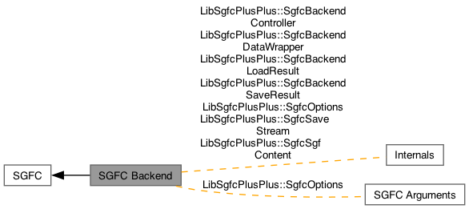

- Generated by
 1.16.1
1.16.1
|
libsgfc++ 3.0.0
A C++ library that uses SGFC to read and write SGF (Smart Game Format) data.
|
The SGFC Backend module contains the library-internal backend functionality for interfacing with SGFC. More...

Classes | |
| class | LibSgfcPlusPlus::SgfcBackendController |
| The SgfcBackendController class encapsuslates the SGFC backend and is responsible for coordinating access to it. More... | |
| class | LibSgfcPlusPlus::SgfcBackendDataWrapper |
| The SgfcBackendDataWrapper class is a wrapper around the SGFInfo data structure that is defined by the SGFC backend. SgfcBackendDataWrapper is responsible for managing the memory of an SGFInfo object. More... | |
| class | LibSgfcPlusPlus::SgfcBackendLoadResult |
| The SgfcBackendLoadResult class provides access to the result of a load operation performed by SgfcBackendController. More... | |
| class | LibSgfcPlusPlus::SgfcBackendSaveResult |
| The SgfcBackendSaveResult class provides access to the result of a save operation performed by SgfcBackendController. More... | |
| class | LibSgfcPlusPlus::SgfcOptions |
| The SgfcOptions class is used to capture a snapshot of the option values in an SGFCOptions struct, and to reconfigure an SGFCOptions struct with those captured values at a later time. More... | |
| class | LibSgfcPlusPlus::SgfcSaveStream |
| The SgfcSaveStream class captures the stream of save data that is generated by SGF. More... | |
| class | LibSgfcPlusPlus::SgfcSgfContent |
| The SgfcSgfContent class represents a distinct piece of SGF content that is generated by SGFC when it performs a save operation. SgfcSgfContent objects are immutable. More... | |
The SGFC Backend module contains the library-internal backend functionality for interfacing with SGFC.
The backend functionality in this module is used internally by the front-facing public API classes in the SGFC Frontend module. The backend functionality has no direct representation in the library's public API.